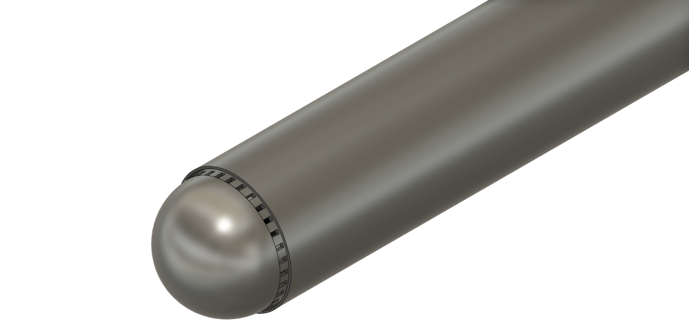
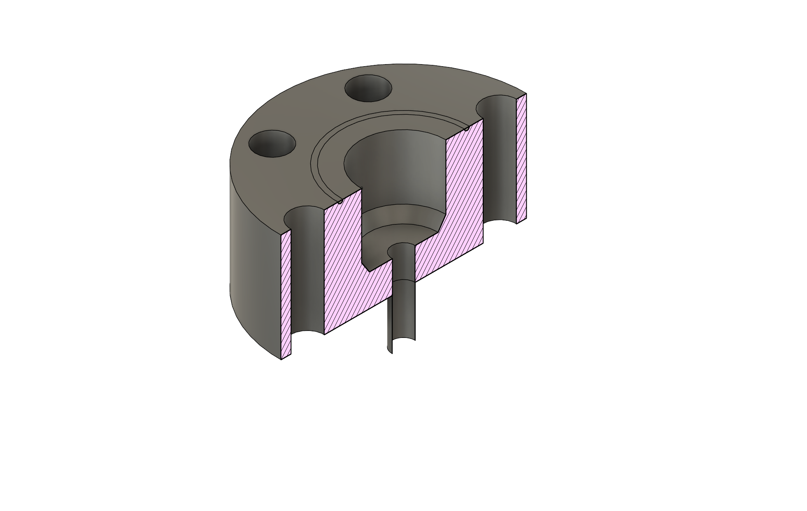
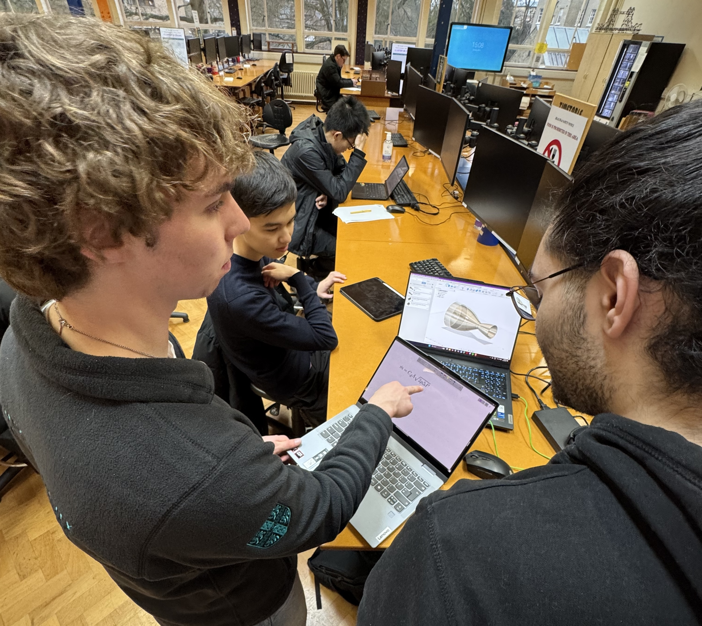
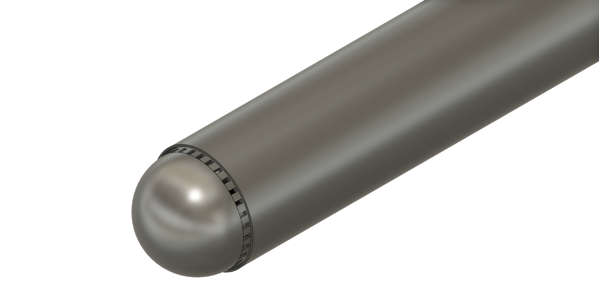
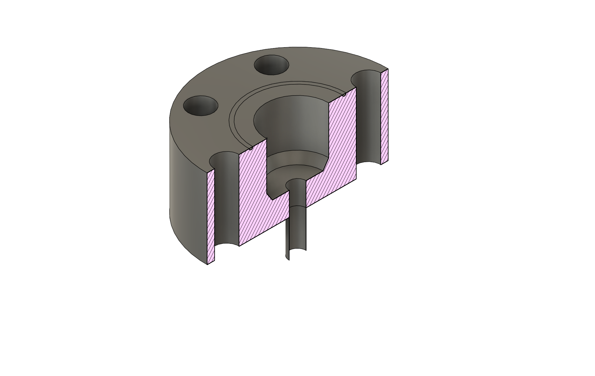
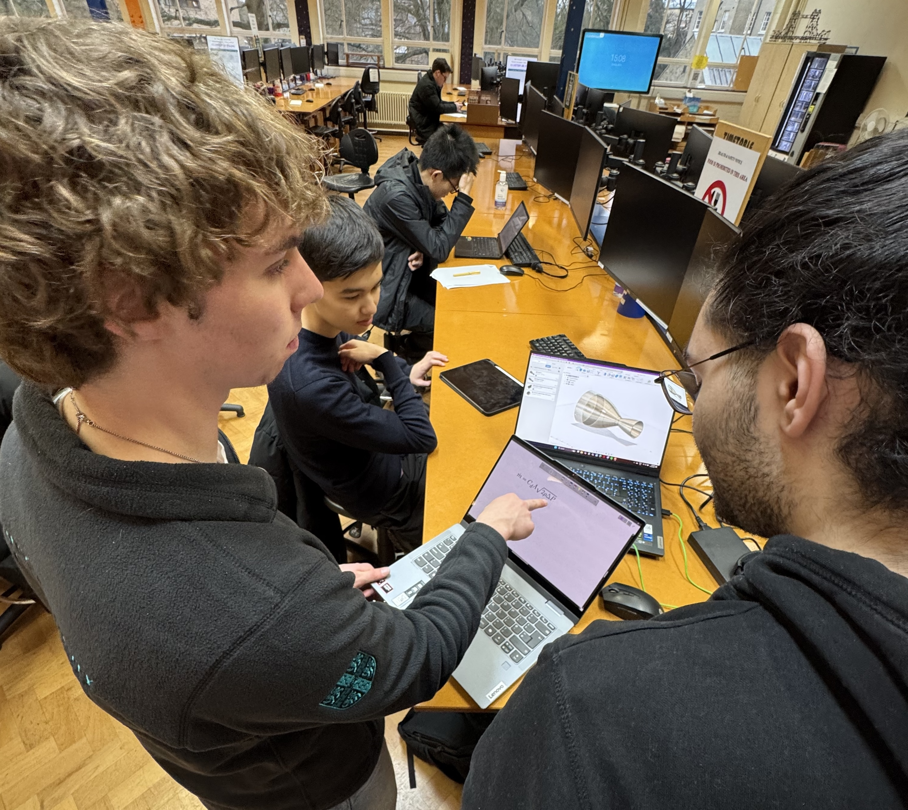

CUSF Propulsive Lander Team
Team of 30+ within CUSF founded in December 2024 to develop a reusable liquid fuelled hopper rocket that flies to 100m and lands propulsively to compete in the Collegiate Propulsive Lander Challenge (CPLC) against 20+ universities in the US, UK, Europe, Australia, and more.
Our Milestones

1. Mini-TVC Drone
Designing a Thrust Vector Controlled drone to test and demonstrate flight software and control systems. This is the first step towards building the complex guidance systems needed for a propulsive landing.
Sub-teams:
- Control Systems
- Software
- Electronics
- Mechanical
 





2. Throttlable Liquid-Fuelled Rocket Engine
x2 Propulsion Teams are in competition to design, build, and test a highly throttlable liquid fuelled rocket engine. This engine is the heart of the lander, allowing for the precise thrust control needed to hover and land.
Sub-teams:
- x2 Propulsion Teams
- Feed Systems
3. Mini-Hopper
A compact liquid fuelled hopper rocket with a mass of around 25kg, designed to demonstrate vertical takeoff and propulsive landing capabilities. This mini-hopper serves as a proof-of-concept platform to validate our control systems and landing algorithms before scaling up.
Target:
- One of UK's first propulsively landed hopper rocket built by students
- ~25kg lift-off mass
- Multiple test flights to validate systems
- Controlled vertical landing
.png)
4. Large Hopper - CPLC Competition
The ultimate challenge: a full-scale competition vehicle meeting the Collegiate Propulsive Lander Challenge (CPLC) criteria. This vehicle will fly to 100+ meters altitude, hover, and land propulsively with precision. Success here opens the door to even more ambitious recovery projects.
CPLC Requirements:
- 3kN thrust capability
- 230kg lift-off mass
- 100+ meter altitude capability
- Precise return to launch site
- Compete against 20+ international universities
Meet the Team
Our project is driven by a passionate and dedicated team of over 30 students from across the university, spanning all sub-teams.

Founding Team in January 2025